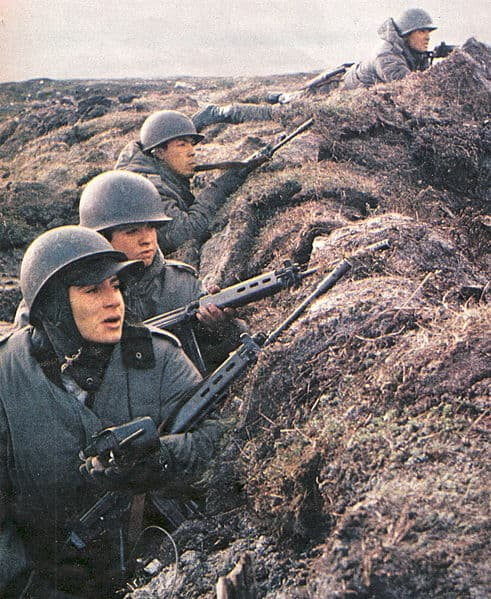
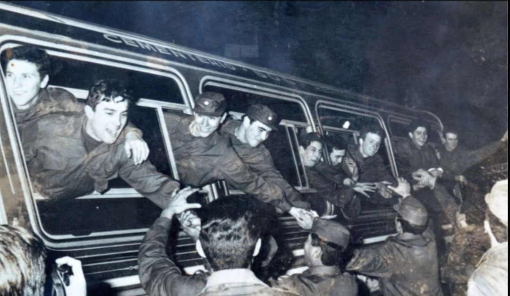

El 2 de Abril de 1982 en Plaza de Mayo, el presidente de facto de ese entonces, Leopoldo Fortunato Galtieri, daba una cadena nacional en el balcon de la casa rosada, declarandole la guerra a Reino Unido, para recuperar las islas.
La plaza se ensordeció al grito de "Si quieren venir que vengan, y les presentaremos batalla..."
La Guerra de Malvinas empezó en 1982, principalmente porque la dictadura argentina estaba en crisis, había problemas económicos y mucha gente en contra, así que quisieron tapar lo que ocurria en el pais provocando una guerra. Un hecho importante fue lo del chatarrero Constantino Davidoff, que fue a Georgias del Sur a desarmar instalaciones y puso la bandera argentina, lo que generó tensión con los británicos al creer que era una forma de "soberania". Esa situación provocó el inicio de la guerra y un ambiente tenso entre Argentina y Reino Unido


El 14 de junio de 1982, terminaria la guerra, con 649 soldados argentinos caidos, se daba por terminada la guerra, pero los veteranos al volver al pais fueron perjudicados por los estigmas sociales, el estres y traumas post-guerra, impidiendoles tener una vida normal y corriente.
Debido a eso mas de 800 veteranos se quitaron la vida.
Pero no fue hasta el año 1992 que el 2 de Abril se conmemoró sus actos de valentía y patriotismo, siendo ley nacional a partir del 22 de noviembre del 2000, recibiendo el reconocimiento que se merecen y dejando de ser "NN".
Hoy en dia, el 2 de Abril es conmemorado un dia Nacional por los soldados abatidos en la guerra.
Este es el himno conmemorativo a las Islas Malvinas.